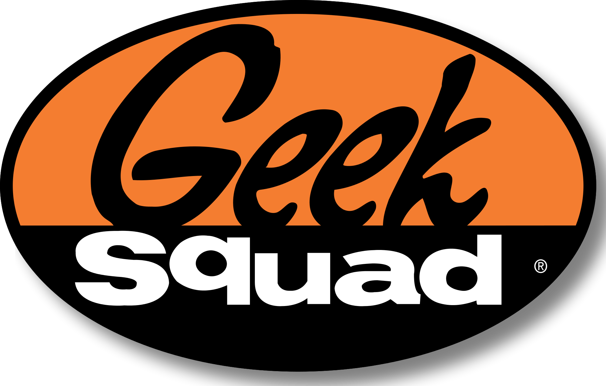

Professional Goals
I aspire to work in a field where I am constantly learning and engaged. What better field to go into than software engineering. I find artificial intelligience to be the most ground breaking aspect of software development where I would be able to work on amazing projects. Im sure I will also dabble in everything I find interesting along the way. EX: Full-Stack development, Mobile Applications, and Web Applications.
Key Competencies
| Languages | Frameworks | Version Control |
|---|---|---|
| Python | Flask | Git |
| HTML5 | ||
| CSS |
My Work
Save A Lot, System Engineer
I currently work on a devoted project team upgrading/testing store pos and server software.
Retail Technology Group, Field Technician
I spent my days traveling around St. Louis performing maintenence and upgrades to servers, POS, and network equipment.
Geek Squad, Advance Repair Agent
I worked with a team of other repair agents who worked on client computers. Usually removing malware and performing operating system repairs or replacing hardware.